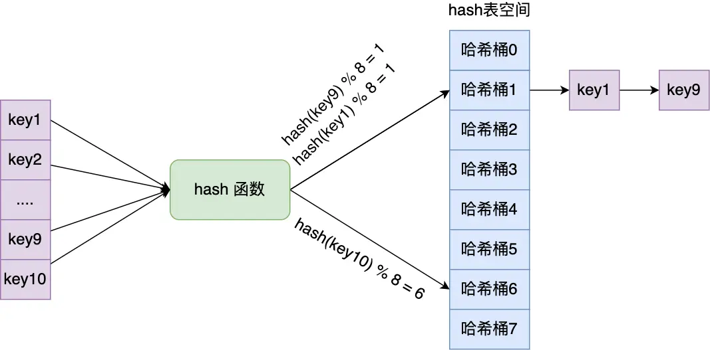
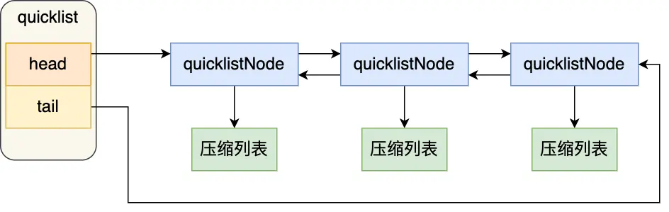

redis-数据结构
Redis 共有9种数据结构：SDS、双向链表、压缩列表、哈希表、跳表、整数集合、quicklist、listpack。
键值对数据库是怎么实现的？
Redis 的键值对中的 key 就是字符串对象，而 value 可以是字符串对象，也可以是集合数据类型的对象，比如 List 对象、Hash 对象、Set 对象和 Zset 对象。
Redis 保存键值对所涉及到的数据结构

- redisDb 结构，表示 Redis 数据库的结构，结构体里存放了指向了 dict 结构的指针；
- dict 结构，结构体里存放了 2 个哈希表，正常情况下都是用「哈希表1」，「哈希表2」只有在 rehash 的时候才用，具体什么是 rehash，我在本文的哈希表数据结构会讲；
- ditctht 结构，表示哈希表的结构，结构里存放了哈希表数组，数组中的每个元素都是指向一个哈希表节点结构（dictEntry）的指针；
- dictEntry 结构，表示哈希表节点的结构，结构里存放了 **void * key 和 void * value 指针， key 指向的是 String 对象，而 value 则可以指向 String 对象，也可以指向集合类型的对象，比如 List 对象、Hash 对象、Set 对象和 Zset 对象。
数据类型与数据结构对应

redis 这么快的原因
- 内存数据库，所有操作都在内存上。
- 高效的数据结构。
redis 数据结构共有 9 种
SDS、双向链表、压缩列表、哈希表、跳表、整数集合、quicklist、listpack。
对象
redis里的键 void * key 和 值 void * value 的指针指向的是 Redis 对象，Redis 中的每个对象都由 redisObject 结构表示，如下图：

- type，标识该对象是什么类型的对象（String 对象、 List 对象、Hash 对象、Set 对象和 Zset 对象）；
- encoding，标识该对象使用了哪种底层的数据结构；
- ptr，指向底层数据结构的指针。
SDS
键值对中的键是字符串类型，值有时也是字符串类型。
Redis 是用 C 语言实现的，但是它没有直接使用 C 语言的 char* 字符数组来实现字符串，而是自己封装了一个名为简单动态字符串（simple dynamic string，SDS） 的数据结构来表示字符串，也就是 Redis 的 String 数据类型的底层数据结构是 SDS。
C 语言字符串的缺陷
- 获取字符串长度的时间复杂度为 O（N）；
- 字符串的结尾是以 “\0” 字符标识，字符串里面不能包含有 “\0” 字符，因此不能保存二进制数据；
- 字符串操作函数不高效且不安全，比如有缓冲区溢出的风险，有可能会造成程序运行终止；
- 比如strcat 函数是可以将两个字符串拼接在一起。
- 如果没有为拼接后的对象分配足够多的内存，就会发生缓冲区溢出。
- 拼接过程需要遍历到目的对象末尾，再遍历待拼接对象，效率低。
SDS 结构设计

SDS 扩容规则
- 如果所需的 sds 长度小于 1 MB，那么最后的扩容是按照翻倍扩容来执行的。
- 如果所需的 sds 长度超过 1 MB，那么最后的扩容长度应该是 newlen + 1MB。
链表
Redis 的 List 对象的底层实现之一就是链表。C 语言本身没有链表这个数据结构的，所以 Redis 自己设计了一个链表数据结构。是由 list 结构和 3 个 listNode 结构组成的双向链表。

优势
- 获取某个节点的前置节点或后置节点的时间复杂度只需O(1)。
- 获取链表的表头节点和表尾节点的时间复杂度只需O(1)。
- 获取链表中的节点数量的时间复杂度只需O(1)。
- 链表节点可以保存各种不同类型的值。
缺陷
- 链表每个节点之间的内存都是不连续的，意味着无法很好利用 CPU 缓存。
- 保存一个链表节点的值都需要一个链表节点结构头的分配，内存开销较大。
压缩列表
压缩列表的最大特点，就是它被设计成一种内存紧凑型的数据结构，占用一块连续的内存空间。

压缩列表节点包含三部分内容：
1. prevlen，记录了「前一个节点」的长度，目的是为了实现从后向前遍历；
2. encoding，记录了当前节点实际数据的「类型和长度」，类型主要有两种：字符串和整数。
3. data，记录了当前节点的实际数据，类型和长度都由 encoding 决定；
优势
- 内存紧凑型的数据结构，占用一块连续的内存空间，可以利用 CPU 缓存；
- 而且会针对不同长度的数据，进行相应编码，这种方法可以有效地节省内存开销。
缺陷
- 不能保存过多的元素，否则查询效率就会降低；
- 新增或修改某个元素时，压缩列表占用的内存空间需要重新分配，甚至可能引发连锁更新的问题。
哈希表
哈希表是一种保存键值对（key-value）的数据结构。
优势
它能以 O(1) 的复杂度快速查询数据。怎么做到的呢？将 key 通过 Hash 函数的计算，就能定位数据在表中的位置，因为哈希表实际上是数组，所以可以通过索引值快速查询到数据。
缺点
哈希表大小固定的情况下，随着数据不断增多，那么哈希冲突的可能性也会越高。
链式哈希
Redis 采用了「链式哈希」来解决哈希冲突。在不扩容哈希表的前提下，将具有相同哈希值的数据串起来，形成链接，以便这些数据在表中仍然可以被查询到。
链式哈希局限性也很明显，随着链表长度的增加，在查询这一位置上的数据的耗时就会增加，毕竟链表的查询的时间复杂度是 O(n)。
rehash
Redis 定义一个 dict 结构体，这个结构体里定义了两个哈希表（ht[2]）。
在正常服务请求阶段，插入的数据，都会写入到「哈希表 1」，此时的「哈希表 2 」 并没有被分配空间。
随着数据逐步增多，触发了 rehash 操作，这个过程分为三步：
1. 给「哈希表 2」 分配空间，一般会比「哈希表 1」 大 2 倍；
2. 将「哈希表 1 」的数据迁移到「哈希表 2」 中；
3. 迁移完成后，「哈希表 1 」的空间会被释放，并把「哈希表 2」 设置为「哈希表 1」，然后在「哈希表 2」 新创建一个空白的哈希表，为下次 rehash 做准备。
如果「哈希表 1 」的数据量非常大，那么在迁移至「哈希表 2 」的时候，因为会涉及大量的数据拷贝，此时可能会对 Redis 造成阻塞，无法服务其他请求。
渐进式 rehash
为了避免 rehash 在数据迁移过程中，因拷贝数据的耗时，影响 Redis 性能的情况，所以 Redis 采用了渐进式 rehash，也就是将数据的迁移的工作不再是一次性迁移完成，而是分多次迁移。
渐进式 rehash 步骤如下：
1. 给「哈希表 2」 分配空间；
2. 在 rehash 进行期间，每次哈希表元素进行更新时，将相应key-value搬迁到「哈希表 2」上进行更新，新增直接在「哈希表 2」上新增，删除和查找依次在「哈希表 1」和「哈希表 2」上操作。
3. 随着处理客户端发起的哈希表操作请求数量越多，最终在某个时间点会把「哈希表 1 」的所有 key-value 迁移到「哈希表 2」，从而完成 rehash 操作。
rehash 触发条件
负载因子 = 哈希表已保存节点数量 / 哈希表大小
触发 rehash 操作的条件，主要有两个：
当负载因子大于等于 1 ，并且 Redis 没有在执行 bgsave 命令或者 bgrewiteaof 命令，也就是没有执行 RDB 快照或没有进行 AOF 重写的时候，就会进行 rehash 操作。
当负载因子大于等于 5 时，此时说明哈希冲突非常严重了，不管有没有有在执行 RDB 快照或 AOF 重写，都会强制进行 rehash 操作。
整数集合
整数集合是 Set 对象的底层实现之一。
当一个 Set 对象只包含整数值元素，并且元素数量不大时，就会使用整数集这个数据结构作为底层实现。
整数集合结构设计
本质上是一块连续内存空间，保存元素的容器是一个 contents 数组。
整数集合的升级操作
当我们将一个新元素加入到整数集合里面，如果新元素的类型（int32_t）比整数集合现有所有元素的类型（int16_t）都要长时，整数集合需要先进行升级，也要维持整数集合的有序性。
1. 先计算需要扩容的空间，在原有空间上扩容。
2. 旧数组倒序遍历处理升级每个元素并放在相应位置。
3. 将待插入元素放到最后应该处于的位置。
整数集合升级有什么好处呢？
不做升级时最简单的方案是使用int64_t类型数组，存在内存浪费情况。
只有实现升级才能够依据元素具体类型来动态选择最优方案，尽可能节省内存资源。
不支持升级后又降级的操作。
跳表
Redis 只有 Zset 对象的底层实现用到了跳表，跳表的优势是能支持平均 O(logN) 复杂度的节点查找。
zset 结构体里有两个数据结构：
一个是跳表：高效的范围查询
一个是哈希表：高效单点查询。
跳表结构设计
跳表是在链表基础上改进过来的，实现了一种「多层」的有序链表，这样的好处是能快速定位数据。
跳表节点查询过程
查找一个跳表节点的过程时，跳表会从头节点的最高层开始，逐一遍历每一层。在遍历某一层的跳表节点时，会用跳表节点中的 SDS 类型的元素和元素的权重来进行判断：
1. 如果当前节点的权重「小于」要查找的权重时，跳表就会访问该层上的下一个节点。
2. 如果当前节点的权重「等于」要查找的权重时，并且当前节点的 SDS 类型数据「小于」要查找的数据时，跳表就会访问该层上的下一个节点。
3. 如果上面两个条件都不满足，或者下一个节点为空时，跳表就会使用目前遍历到的节点的 level 数组里的下一层指针，然后沿着下一层指针继续查找，这就相当于跳到了下一层接着查找。
跳表节点层数设置
跳表的相邻两层的节点数量的比例会影响跳表的查询性能。
跳表的相邻两层的节点数量最理想的比例是 2:1，查找复杂度可以降低到 O(logN)。
那怎样才能维持相邻两层的节点数量的比例为 2 : 1 呢？
1. 如果采用新增节点或者删除节点时，来调整跳表节点以维持比例的方法的话，会带来额外的开销。
2. Redis 则采用一种巧妙的方法是，跳表在创建节点的时候，随机生成每个节点的层数，并没有严格维持相邻两层的节点数量比例为 2 : 1 的情况。
具体的做法是，跳表在创建节点时候，会生成范围为[0-1]的一个随机数，如果这个随机数小于 0.25（相当于概率 25%），那么层数就增加 1 层，然后继续生成下一个随机数，直到随机数的结果大于 0.25 结束，最终确定该节点的层数。
这样的做法，相当于每增加一层的概率不超过 25%，层数越高，概率越低，层高最大限制是 32
为什么用跳表而不用平衡树？
- 从内存占用上来比较，跳表比平衡树更灵活一些。
- 平衡树每个节点包含 2 个指针（分别指向左右子树）
- 跳表每个节点包含的指针数目平均为 1/(1-p)，具体取决于参数 p 的大小。如果像 Redis里的实现一样，取 p=1/4，那么平均每个节点包含 1.33 个指针，比平衡树更有优势。
- 在做范围查找的时候，跳表比平衡树操作要简单。
- 平衡树上，我们找到指定范围的小值之后，还需要以中序遍历的顺序继续寻找其它不超过大值的节点。
- 在跳表上进行范围查找就非常简单，只需要在找到小值之后，对第 1 层链表进行若干步的遍历就可以实现。
- 从算法实现难度上来比较，跳表比平衡树要简单得多。
- 平衡树的插入和删除操作可能引发子树的调整，逻辑复杂。
- 跳表的插入和删除只需要修改相邻节点的指针，操作简单又快速。
redis为什么使用跳表而不使用B+树或二叉树呢?
- redis 是纯纯的内存数据库。
- 进行读写数据都是操作内存，跟磁盘没啥关系，因此也不存在磁盘IO了，所以层高就不再是跳表的劣势了。
- B+树是有一系列合并拆分操作的，换成红黑树或者其他AVL树的话也是各种旋转，目的也是为了保持树的平衡。
- 而跳表插入数据时，只需要随机一下，就知道自己要不要往上加索引，也就少了旋转平衡的开销。
Mysql的索引为什么使用B+树而不使用跳表?
- mysql 是磁盘数据库。
- B+树是多叉树结构，每个结点都是一个16k的数据页，能存放较多索引信息，三层左右就可以存储2kw左右的数据。也就是说查询一次数据，如果这些数据页都在磁盘里，那么最多需要查询三次磁盘IO。
- 跳表是链表结构，一条数据一个结点，如果最底层要存放2kw数据，且每次查询都要能达到二分查找的效果，2kw大概在2的24次方左右，最坏情况下，这24层数据会分散在不同的数据页里，也即是查一次数据会经历24次磁盘IO。
- 因此存放同样量级的数据，B+树的高度比跳表的要少，如果放在mysql数据库上来说，就是磁盘IO次数更少，因此B+树查询更快。如果放在mysql数据库上来说，就是磁盘IO次数更少，因此B+树查询更快。
- 而针对写操作，B+树需要拆分合并索引数据页，跳表则独立插入，并根据随机函数确定层数，没有旋转和维持平衡的开销，因此跳表的写入性能会比B+树要好。
quicklist
在 Redis 3.2 的时候，List 对象的底层由双向链表或者压缩列表改为 quicklist 数据结构实现。
quicklist 就是「双向链表 + 压缩列表」组合，因为一个 quicklist 就是一个链表，而链表中的每个元素又是一个压缩列表。

在向 quicklist 添加一个元素的时候，不会像普通的链表那样，直接新建一个链表节点。而是会检查插入位置的压缩列表是否能容纳该元素，如果能容纳就直接保存到 quicklistNode 结构里的压缩列表，如果不能容纳，才会新建一个新的 quicklistNode 结构。
listpack
listpack 采用了压缩列表的很多优秀的设计，比如还是用一块连续的内存空间来紧凑地保存数据，并且为了节省内存的开销，listpack 节点会采用不同的编码方式保存不同大小的数据。
encoding，定义该元素的编码类型，会对不同长度的整数和字符串进行编码；
data，实际存放的数据；
len，encoding+data的总长度；
listpack 没有压缩列表中记录前一个节点长度的字段了，listpack 只记录当前节点的长度，当我们向 listpack 加入一个新元素的时候，不会影响其他节点的长度字段的变化，从而避免了压缩列表的连锁更新问题。